홈 › 자리별 덱 › 과제 발표평가
과제 발표평가
평가위원이 화면을 직접 읽으며 과제를 평가해요
평가 항목 순서 밀도 높음 15–25장
이런 자리
평가위원은 발표를 듣기보다 화면을 직접 읽어요. 그래서 밀도가 높고, 슬라이드 제목은 평가 항목 이름 + 부제로 써요.
- 흐름: 필요성(배경 → 한계 → 목표) → 차별성 → 목표 · 추진 전략 → 추진체계 → 일정 → 성과지표 · 기대효과 → 연구진
- 평가 지표나 사전질의 번호가 있으면 헤더 오른쪽 태그로 달아요.
팁
- 한 문장(평가위원이 내일 기억했으면 하는 것)과 그걸 받치는 근거 셋을 먼저 정해요.
- 첫 장부터 숫자로 보여 주는 문제로 시작해요. "최근 ~가 각광받고 있습니다"로 시작하지 않아요.
- 목표마다 어떤 데이터로 → 어떤 분석으로 → 무엇이 나오면 성공인지 보여 줘요.
- 예상 질문(할 수 있나 · 새로운가 · 표본 수와 통계 · 왜 이 방법인가)은 어려운 것부터 답을 준비해요.
- 서면평가는 클린, 발표평가는 표지·간지만 리치로 해도 좋아요.
덱 흐름
표지 · 목차 → 필요성 → 차별성 → 목표 · 추진 전략 → 추진체계 · 일정 → 성과지표 · 기대효과 → 연구진 · 마무리
1
표지 · 목차
과제명은 두 줄 이내. 평가 항목 순서대로 목차.
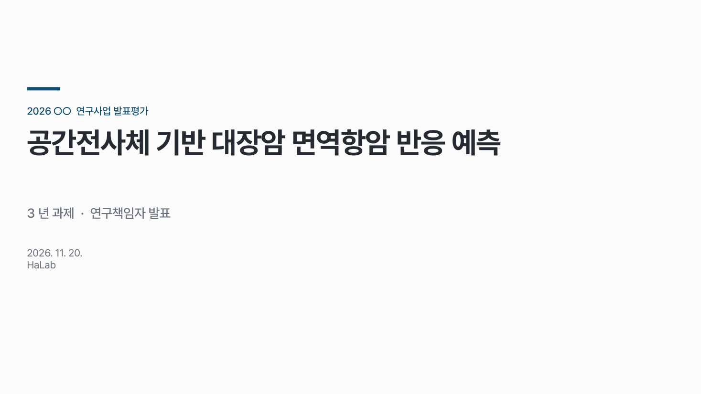
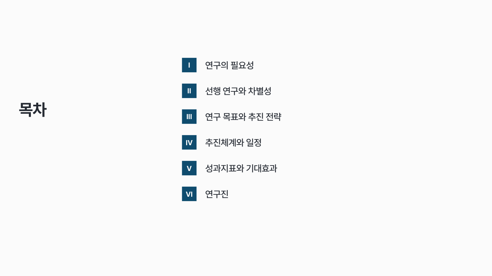
2
필요성
배경 → 한계 → 목표를 한 장에. 숫자로 보여 주는 문제부터.

3
차별성
기존 방법과 같은 기준으로 견주고, 제안 쪽만 강조해요.
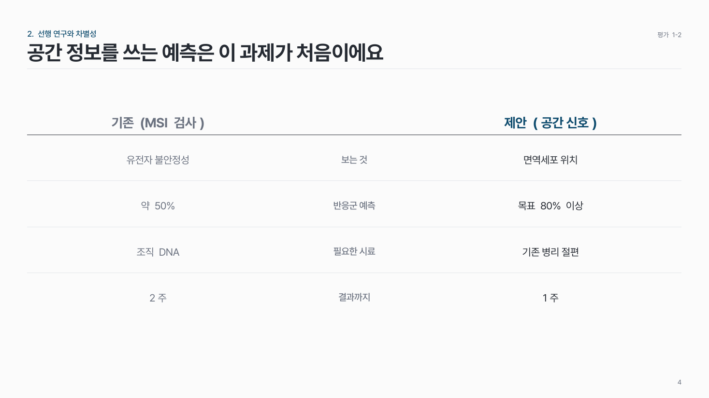
4
목표 · 추진 전략
목표 하나 → 전략 2–3개 → 전략마다 과제 2–3개.
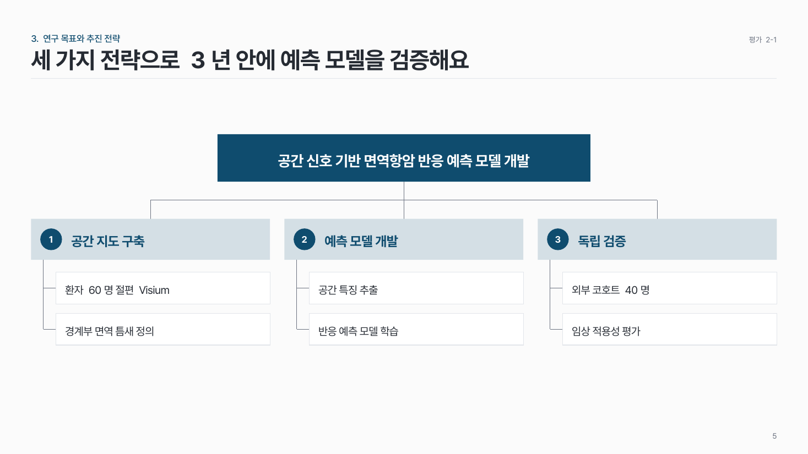
5
추진체계 · 일정
누가 무엇을 맡는지, 언제 하는지.
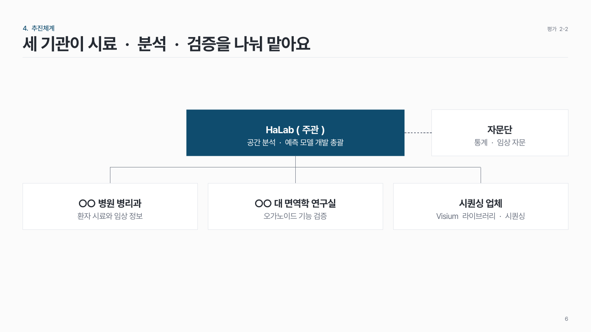
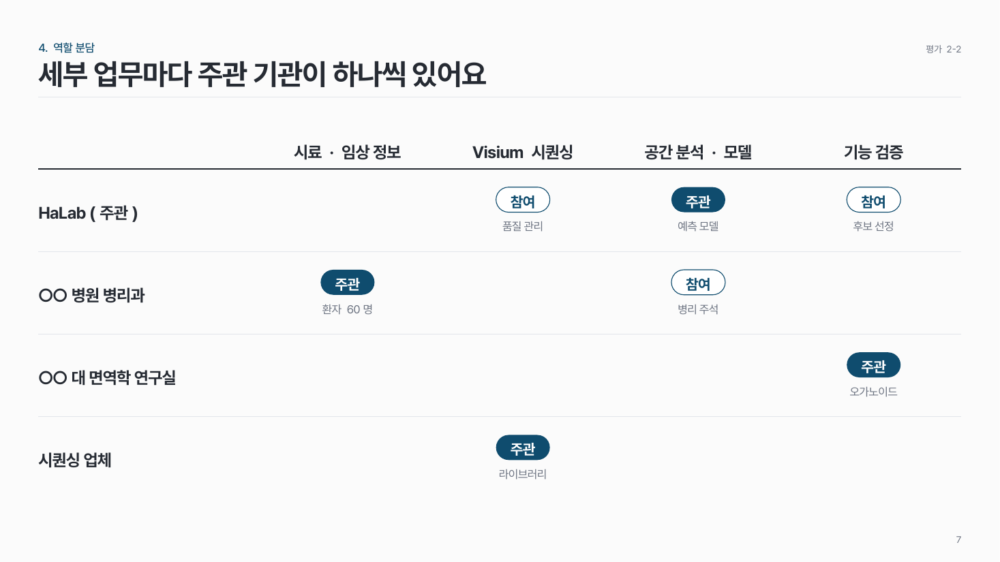
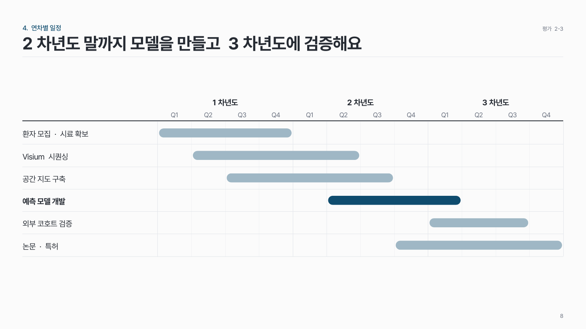
6
성과지표 · 기대효과
정량 목표는 표로, 기대효과는 영역마다 근거 수치 하나.
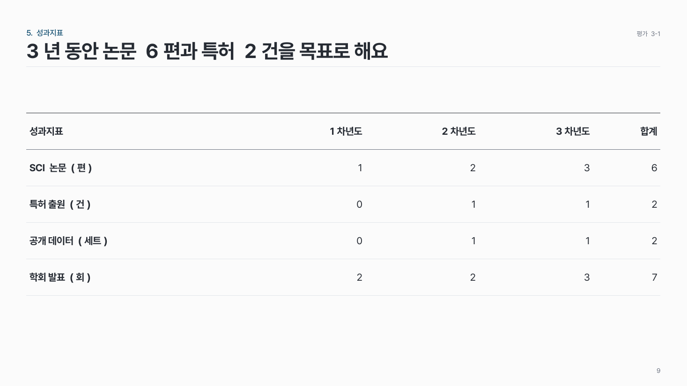
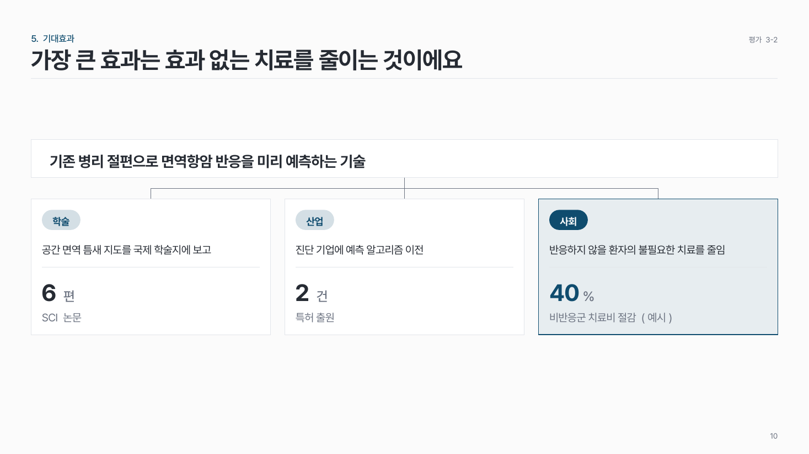
7
연구진 · 마무리
책임자 1 + 참여 3 이내, 약력은 3줄.
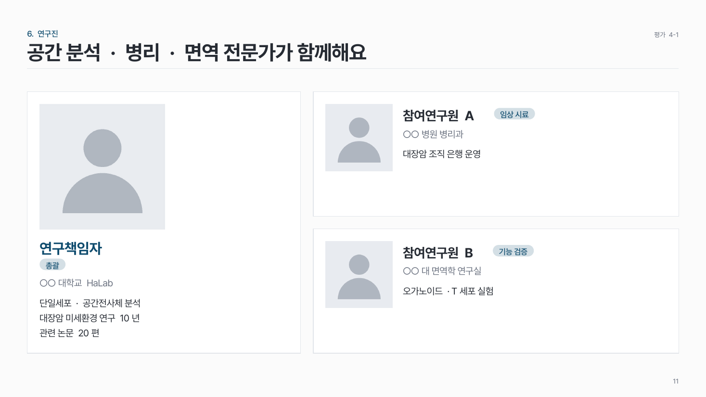
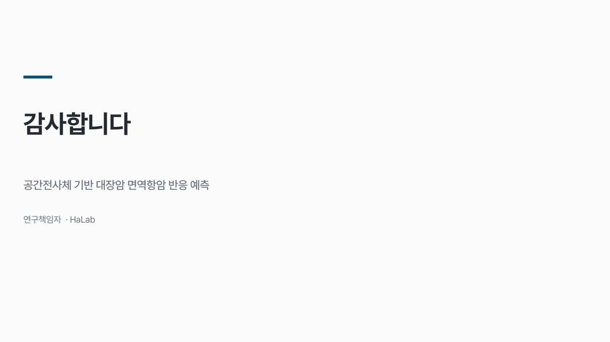